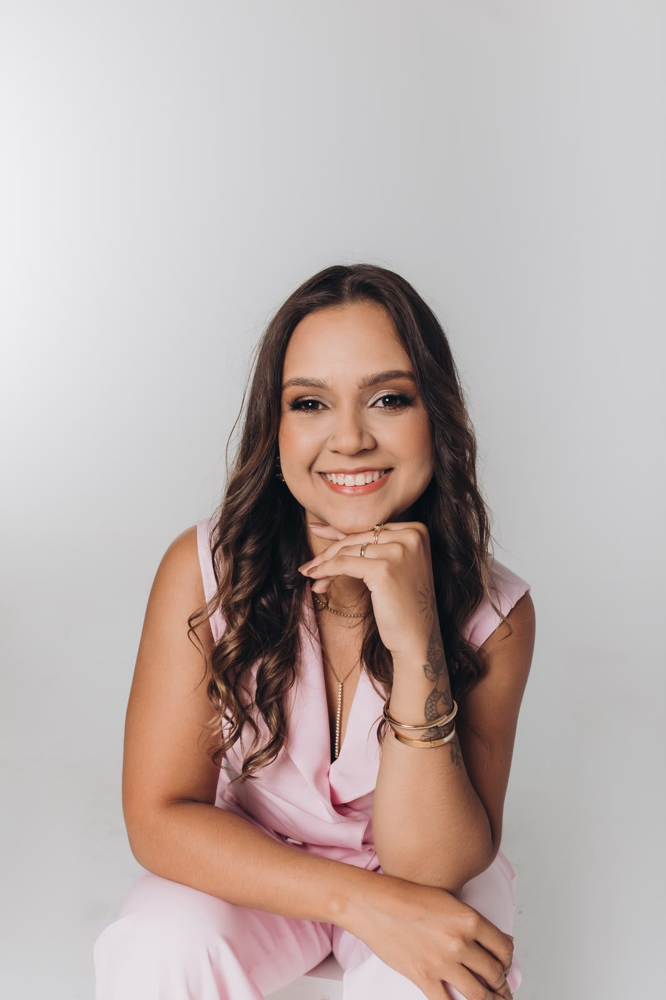
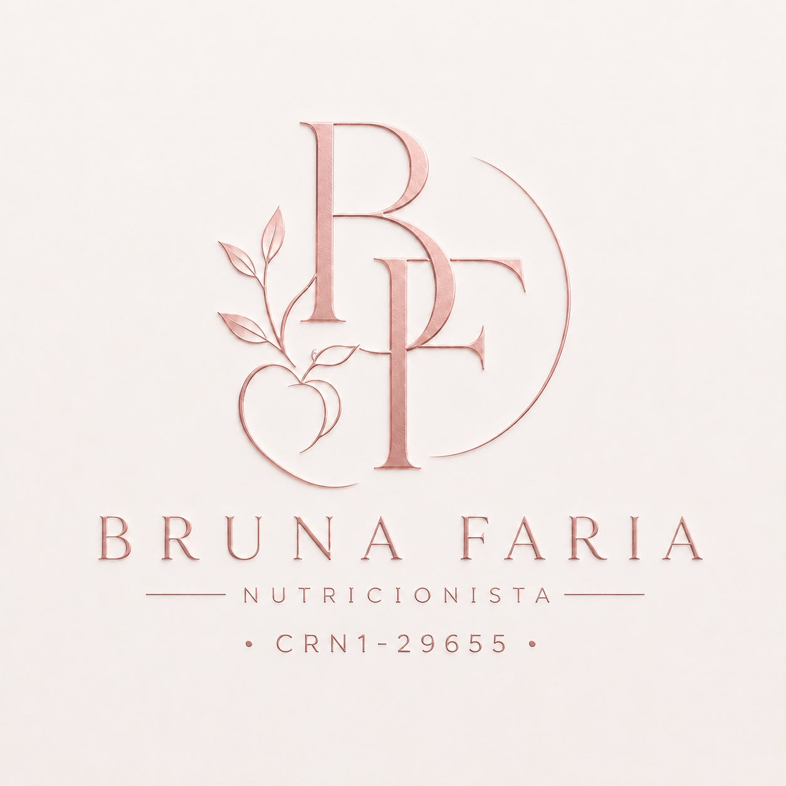
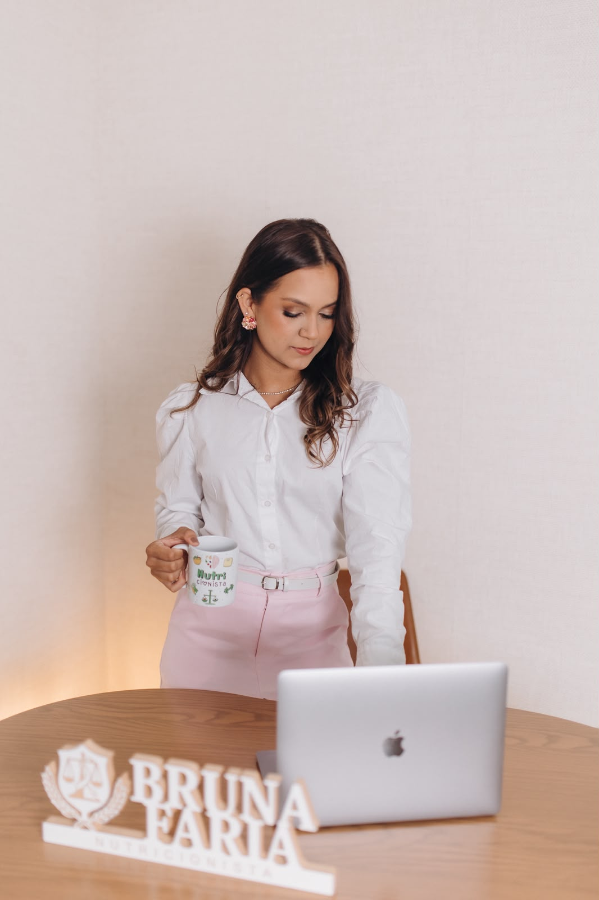

Bruna Faria - CRN 29655/P
Nutricionista Clínica, Esportiva e Estética
Nutricionista Clínica, Esportiva e Estética
Sua jornada começa aqui!
Nutrição personalizada para uma vida mais saudável, equilibrada e leve.

Nutrição personalizada para uma vida mais saudável, equilibrada e leve.
Nutricionista pós graduada em Nutrição Esportiva e Estética e acredito que a nutrição vai muito além da balança. Meu trabalho é ajudar pessoas a transformarem sua relação com a alimentação, alcançando seus objetivos estéticos sem deixar de lado a saúde, o equilíbrio e a qualidade de vida.
Atuo com foco em recomposição corporal, hipertrofia e emagrecimento, desenvolvendo estratégias personalizadas que respeitam a individualidade de cada pessoa. Um acompanhamento baseado em ciência, constância e estratégias alimentares que se encaixam na sua rotina, sem dietas restritivas ou soluções temporárias, com foco em resultados sustentáveis.
Entendo sua rotina, hábitos, objetivos e desafios para construir uma estratégia alinhada a você.
Elaboro uma estratégia alimentar personalizada, prática e adequada à sua realidade.
Suporte durante a jornada para garantir uma evolução segura e consistente.
Alcançar resultados consistentes e sustentáveis.

Estratégias individualizadas para redução de gordura corporal com saúde e equilíbrio.
Planejamento nutricional para reduzir gordura e melhorar a composição corporal.
Estratégias nutricionais para ganho de massa muscular e melhora da performance.
Alimentação estratégica para melhorar rendimento, recuperação e desempenho.
Construção de hábitos saudáveis que se adaptam à sua rotina.
Acompanhamento nutricional para preservar massa muscular e otimizar resultados.
Uma avaliação completa para entender sua rotina, objetivos e necessidades, com definição de estratégia nutricional personalizada.
Solicitar informaçõesEscolha o nível de acompanhamento ideal para sua jornada, com suporte personalizado e estratégias pensadas para sua evolução.
Quero saber mais
Em breve você encontrará e-books, receitas, listas de compras e materiais exclusivos.
Estamos preparando um ambiente exclusivo com materiais de apoio, receitas, orientações e conteúdos complementares.
Em breveA consulta é individualizada, considerando seus objetivos, rotina e hábitos para construir uma estratégia personalizada.
Sim! O atendimento pode ser realizado de forma online ou presencial, conforme disponibilidade.
Sim. O plano alimentar é elaborado de forma individualizada e enviado após a consulta.

Será um prazer conhecer você e construir juntos uma estratégia nutricional personalizada, respeitando sua rotina, seus objetivos e sua individualidade.
Agendar Consulta